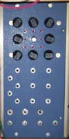

|
The latest version can be found here. A basic switching/sequencing module with many uses. Some ideas on how to use this module: This is a "core" module for sequencer type work. In its simplest form, it can be used to select between different signal or CV sources. With a simple pot-based front end and an external clocking LFO, it can be made to function as a regular sequencer. It is also possible to sequence between constant and modulated signals, for example, to enable vibrato to be placed on every fourth note. It can also count down, under external control, allowing for some interesting patterns to be produced with the addition of an extra clocking LFO. It can handle voltages in the range of +/-10v. It is a multiplexor, i.e. not bidirectonal. It can route one of eight signals to its output, but not the other way around. It can also provide independant gate signals for each selected input. A little on how it works:
The schematic of the Sequential Switch. Note that some 4516 chips may need board modifications to work.
Along the left side of the circuit diagram there are the four control input processors. These convert any incoming CV or gate signal to those suitable for the internal circuitry of the module. Their sensing point is around 2V. The up/down control is gated with the reset input to produce two different behaviors for reset. When the up/down control is set to UP, reset will set the switch to position 1. When the up/down control is set to DOWN, reset will set the switch to position 8 by preloading this value into the counter at the core of the design. The external CV will override the setting of the up/down panel switch. The counter itself is a 4516, and up/down counter with programmable inputs. While it is allowed to count through it's sixteen step cycle, only the three least significant bits are used, giving an output that ranges between 0 and 7. These bits are routed to the address inputs of two 4051 analog multiplexer/demultiplexers. The 4051 to the left, operating as a demultiplexer, routes +14.4 volts to each of 8 buffers in turn. These buffers drive a LED to indicate the selected channel, as well as providing a corresponding gate output. The 4051 to the right, operating as a multiplexer, routes one of the eight input signals through to the output buffer, where both inverted and non-inverted outputs are available. There is an additional Mix In input provided to allow another signal or CV to be mixed with the selected channel of the sequential switch. How does a device (the 4051) that has only a 15v range allow at least +/-10V to pass through it? The answer is it doesn't. By powering the 4051 and its associated drive circuitry from +14.4V and -0.6V, and placing the output of the analog switch at the virtual ground point of an inverting op-amp buffer, the full range of the signal is allowed to pass while the voltage at that point is held near or at 0V by the action of the op-amp while the analog switch is closed. When the analog switch is open, the diode connected between the input and 0V prevents in incoming signal from going below -0.6V, and thus prevents it from going outside the allowed input range. There is no need to protect against excursions in the positive direction, as these are in the allowed input range. A second diode at the output of the analog switch prevents the op-amp from driving the output below -0.6V, should the switch open while such potential exists.
Construction
The component overlay. Connections can be determined from the circuit diagram. See the text regarding the items marked in different colors. Before you start assembly, check the board for etching faults. Look for any shorts between tracks, or open circuits due to over etching. Take this opportunity to sand the edges of the board if needed, removing any splinters or rough edges. When you are happy with the printed circuit board, construction can proceed as normal, starting with the resistors first, followed by the IC socket if used, then moving onto the taller components. In this case I recommend using a socket for both the LM324 and CMOS 4516 counter. Take particular care with the orientation of the polarized components such as electrolytics, diodes, transistors and ICs. When inserting ICs into sockets, take care not to accidentally bend any of the pins under the chip. Also, make sure the notch on the chip is aligned with the notch marked on the PCB overlay. There are numerous ways this board can be used. For example, each input could be fed by a pot wired as a voltage divider, with it's input end normalized to +VE via a 100k (formerly 1k) resistor. This way you would be able to use the module as a sequencer when not using it as a switch. 100k will give quite adequate range on your pots, with improved sensitivity. It is also possible to wire in a "length" switch. Each gate output goes to one position of a 10 way rotary switch, with the common being fed into the RSS pad. At each end of the switches rotation, there should be a position where nothing is connected. Reset behavior when wired like this is a little unusual because the sequence will reset differently when running in Up or Down modes. The two end switch positions are to allow the sequence to run unimpeded. One such position would be okay, the second is simply for convenience. The gate outputs can still be wired to jacks as normal.  I had some trouble on the prototype unit with some brands of 4516 counters. It seems some of them are pedantic about the speed of the rising and falling edges of the clock pulse. The problems experienced were: the counter advancing on both rising and falling edges of the clock pulse, skipping steps, or stepping back and forwards between two steps. The offending devices were Mitsubishi and Fairchild. The National Semiconductor device worked perfectly. The first modification to try is to replace the LM324 with a device with a higher slew rate. A TL074 or similar may do, though if using an op-amp designed for dual rail operation, you will need to increase the 22k resistor to 100k. No harm will come if you just use a 100k in the first place, as long as your chosen transistor has enough gain. If this does not improve the situation, cut the track between pin 7 of the quad op-amp and pin 15 of the 4516. Solder a 1n capacitor across the gap, and solder a 4k7 resistor between pin 15 of the 4516 and ground/0V. You may need to tweak these values. This modification reduces the clock signal to a short spike. Alternatively, you may prefer to simply try a different brand of 4516. Remember that the Motorola device will be numbered 14516. The 10uF electrolytic shown in blue on the layout diagram above is not really needed.
Parts list This is a guide only. Parts needed will vary with individual constructor's needs. If anyone is interested in buying these boards, please check the PCBs for Sale page to see if I have any in stock.
Can't find the parts? See the parts FAQ to see if I've already answered the question. Also see the CGS Synth discussion group.
Article, art & design copyright 2001 by Ken Stone
| ||||||||||||||||||||||||||||||||||||||||||||||||||||||